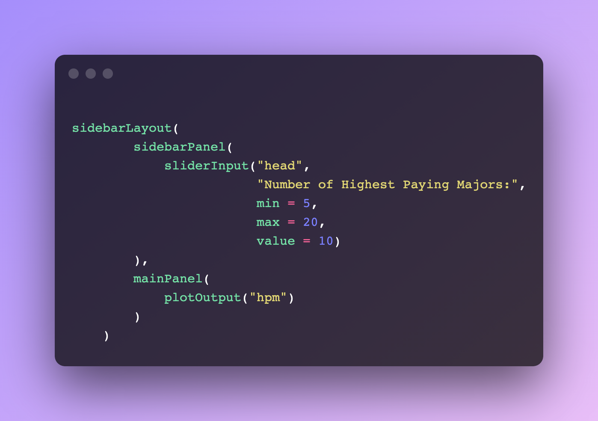
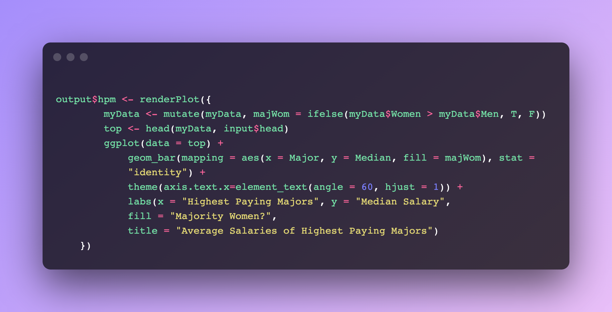
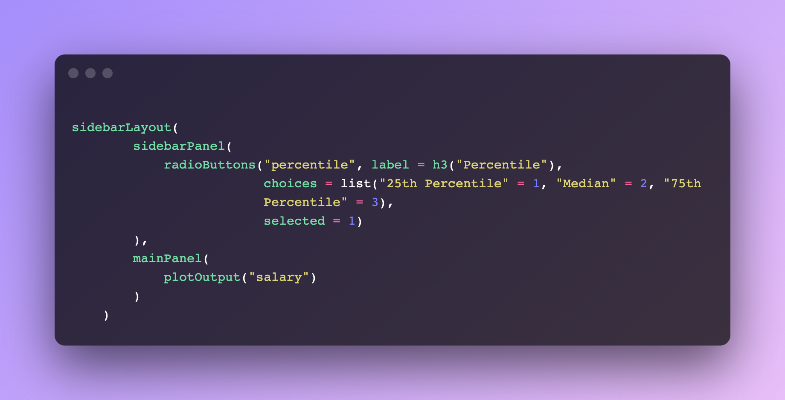
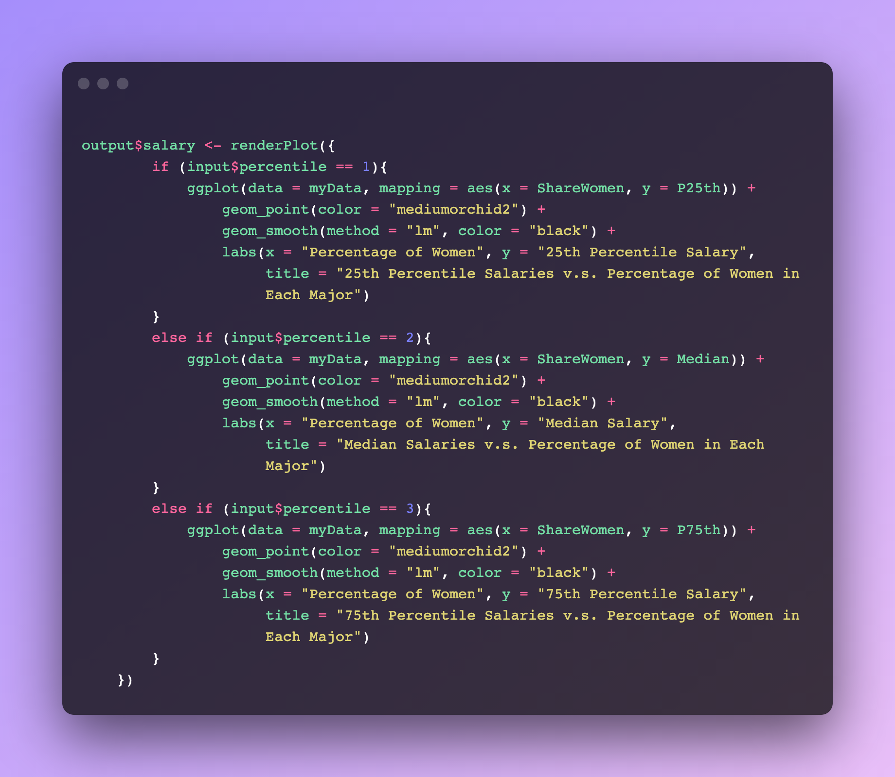
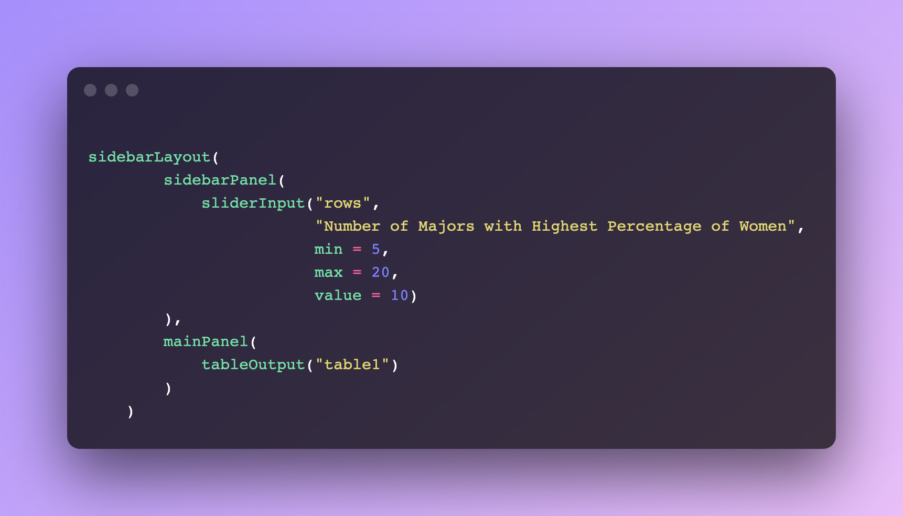
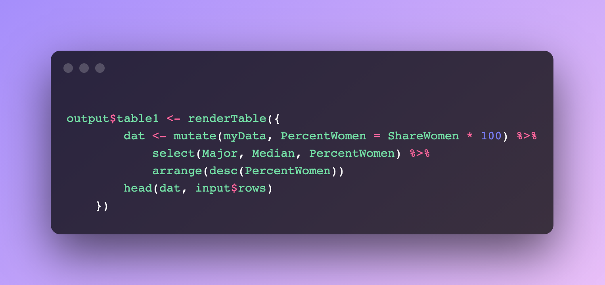

For my Final Project in my Introduction to Data Science class, I developed a Shiny App with interactive graphs and tables using R.
The purpose of this web app is to allow the users to interact with these graphs and tables so that they can answer the question "Do Majors With More Men Than Women Tend to Have Higher Salaries?"
Snippet 1 of 6

This code snippet shows how the UI for the "Average Salaries of Highest Paying Majors" graph and its accompanying slider are created.Snippet 2 of 6

This code snippet shows how the actual contents of the "Average Salaries of Highest Paying Majors" graph are rendered. Snippet 3 of 6

This code snippet shows how the UI for the "25th Percentile Salaries v.s. Percentage of Women in Each Major" graph and its accompanying radio button options are created.Snippet 4 of 6

This code snippet shows how the actual contents of the "25th Percentile Salaries v.s. Percentage of Women in Each Major" graph are rendered.Snippet 5 of 6

This code snippet shows how the UI for the "Number of Majors with Highest Percentage of Women" table and its accompanying slider are created.Snippet 6 of 6

This code snippet shows how the actual contents of the "Number of Majors with Highest Percentage of Women" table are rendered.